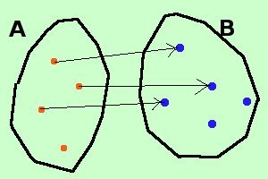
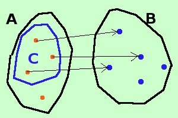
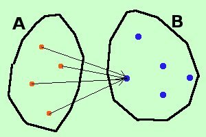
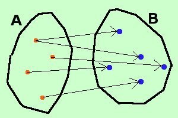

|
 Questa rappresentata a destra non e' una applicazione perche' esiste un elemento dell'insieme A a cui non corrisponde nulla nell'insieme B  Nell'esempio precedente se invece dell'insieme A considero il sottoinsieme C allora ho un'applicazione da C a B f : C --> B 
Questa rappresentata a destra e' un'applicazione da A a B: non importa se piu' elementi di A hanno corrispondente lo stesso elemento di B, l'importante e' che ad ogni elemento di A corrisponda un elemento (qualunque) di B  Se ad ogni elemento di A corrisponde sempre lo stesso elemento di B diciamo che abbiamo una applicazione costante da A a B  Invece questa a destra non e' una applicazione da A a B perche' ad un elemento di A corrispondono 2 elementi di B (e' invece una applicazione se consideriamo la relazione da B ad A) |